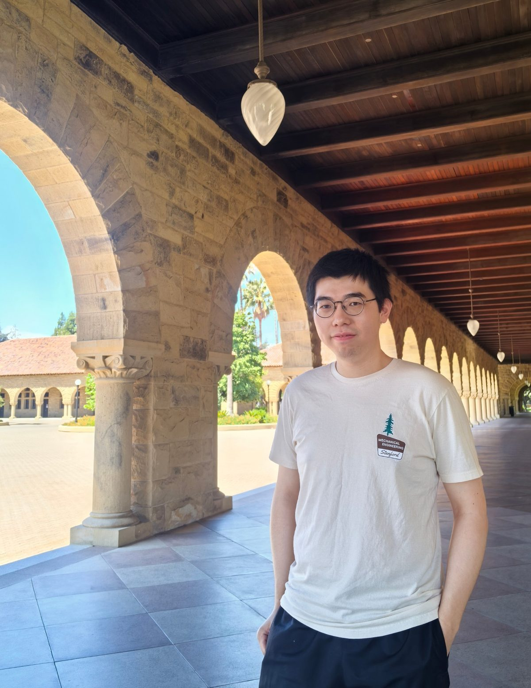

Siyue Yao
I am currently a Ph.D. student in Mechanical Engineering at Shanghai Jiao Tong University (SJTU), advised by Prof. Genliang Chen. I am also a visiting student at Stanford University, working with Prof. Mark Cutkosky in the Biomimetics and Dexterous Manipulation Lab. I received my B.S. in Mechanical Engineering from SJTU in 2022.
My research focuses on the design, analysis, sensing, and control of compliant mechanisms, with a particular focus on grasping and manipulation.
Nature offers a rich source of inspiration, as biological systems leverage compliance to interact with their environments in remarkably adaptable ways. I am fascinated by how such capabilities emerge in nature and how biological principles can inspire new approaches to design.
Outside of research, I enjoy playing football and the violin, and I have a particular passion for classical music.
Email: sy.yao@sjtu.edu.cn
Highlights
Research
How a linkage moves is decided by its geometry. I work on studying the kinematics of rigid mechanisms, such as overconstrained Bricard linkages, presenting analytical kinematic models and looking for their geometric explanations. These approaches reveal motion branches, bifurcations, and specific mechanism designs, such as remote center-of-motion (RCM) mechanisms.
Curved elastic units, and the modules built from them, are the building blocks of my work. Their compliance is useful in three ways:
(1) design specific stiffness: it determines how the system interacts with the environment.
(2) sense the deformation: it indicates the deformation and estimates the forces and contacts.
(3) drive in statics/dynamics: it leads to multi-modal motion.
Modeling the large, nonlinear deformation of elastic beams makes stiffness something to design rather than accept. Beam geometry makes a difference. I work on how to design shape, width, thickness, etc. to achieve desired stiffness characteristics.
When a compliant structure bends, its shape records the interaction. By embedding flexible strain gauges in elastic beams and modeling how deformation propagates along them, contact location and force can be read from the structure itself. This turns compliance into intrinsic sensing for force-aware interactions, including grasping and manipulation.
An elastic beam's deformation can lead to motion. Actuating it in static and dynamic ways makes a difference in its response. Snap-through buckling of elastic beams occurs within 10 ms, giving a lot to think about and utilize in designing interesting systems.
Putting compliant units to work, I build end-effectors in which compliance and sensing are part of the structure rather than add-ons: grippers, wrists, fingertips, hands, and legs that absorb impacts, adapt to contact, feel the interaction with the environment, and react to execute.
Grippers whose fingers are guided or driven by elastic beams, giving tunable passive compliance, active motion and stiffness control, and built-in force sensing to achieve grasping and manipulation tasks.
Compliant wrists whose static and dynamic characteristics can be tuned, aiming at providing safe and stable interaction with the environment, even at high speed.
Compliant fingertips based on elastic units are designed to provide tactile sensing. Unlike visual-tactile methods, this work focuses on providing multiple yet not so many channels of force sensing, aiming at achieving just enough tactile information as a human fingertip does.
Compliant legs integrating elastic units help in:
(1) motion transmission.
(2) impact and required torque reduction.
(3) force sensing and feedback control.
Dexterous hands with elastic units provide structural compliance with motion coupling property, especially under loads. With integrated force sensing, they show better performance in daily tasks.
Animals show marvelous performance using compliant bodies, providing a lot of inspiration for designs.
– rats sweep their whiskers across surfaces
– seals read the wakes of fish and track them
– caterpillars crawl, locusts jump and crickets do both
My work borrows from nature: designing compliant systems that move, feel, and react.
Elastic beams act like whiskers to interact with the environment, both in contact and non-contact form. On land, whiskers help touch and feel the wall and locate the wind; underwater, whiskers help feel the wake and track the source.
Animals switch between different modes to achieve high-performance locomotion. Utilizing the static and dynamic deformation characteristics of elastic beams, locomotion modes, including crawling and jumping, can be achieved. More modes and more functions are waiting to be devised.
Combining compliance of elastic units with pneumatic actuation leads to remarkable motion performance with lightweight yet high power-density systems.
* corresponding author. † equal contribution.
Sensors and Actuators A 2026
arXiv 2026 · under review
J. Phys.: Conf. Ser. 2025
Nature Communications 2025
Education
Stanford University
Visiting Student, Biomimetics and Dexterous Manipulation Lab · Host: Prof. Mark Cutkosky
2026.05 – 2027.05
Shanghai Jiao Tong University
Ph.D. in Mechanical Engineering · Advisor: Prof. Genliang Chen
2022.09 – present
Shanghai Jiao Tong University
B.S. in Mechanical Engineering
2018.09 – 2022.06